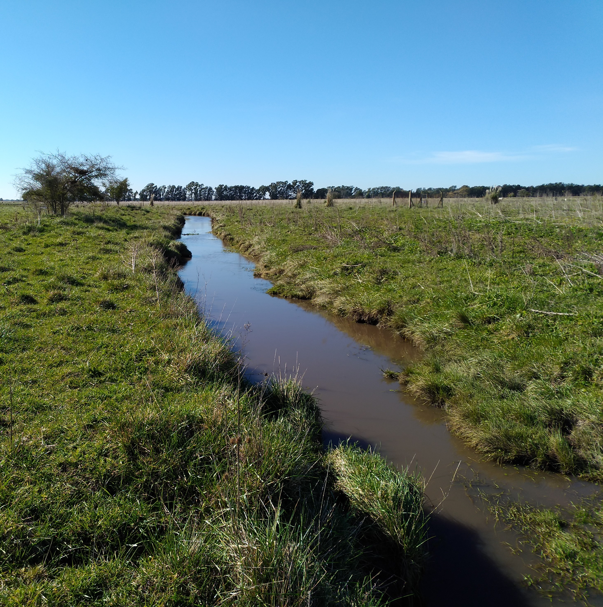

Las diatomeas bentónicas se ven afectadas en sus características funcionales y estructurales por los diversos productos agroquímicos provenientes de las prácticas agrícolas y suelen considerarse indicadores sensibles de contaminación. El objetivo de esta investigación fue estudiar la variación de estos parámetros en dichas comunidades expuestas a diferentes niveles de impacto agrícola durante el periodo de colonización. Se realizó un experimento en la cuenca del arroyo el Pescado, donde se seleccionaron dos sitios con niveles de alto y bajo impacto agrícola. Se siguió el proceso de colonización sobre sustratos artificiales por parte de las diatomeas durante 75 días. Se midieron parámetros físicoquímicos y pesticidas del sitio y las variables biológicas del ensamble. Los resultados muestran un aumento de la diversidad y la riqueza durante el proceso de colonización. El gremio móvil dominó los ensambles, mientras que el gremio de bajo perfil fue más abundante en el arroyo más impactado. El IDP, el índice de diversidad y la proporción de alteraciones nucleares reflejaron la calidad del agua en los sitios.